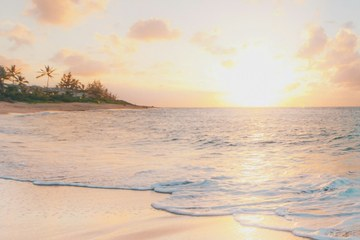

Море и пляжи
Мировой океан занимает около 71% поверхности Земли, его средняя глубина - около 3,7 км, а в Марианской впадине глубина достигает примерно 11 км. Средняя солёность океанской воды - около 35 промилле. Приморский (пляжный) туризм - один из самых массовых видов рекреации. Для пляжного отдыха важны температура воды и воздуха, качество пляжа, безопасность купания и сезон дождей и штормов.
Раздел 1: Понятия и списки
Основные понятиянумерованный список
- Атолл - кольцеобразный коралловый остров, который окружает лагуну.
- Коралловый риф - подводная постройка из известковых скелетов кораллов и других организмов.
- Приливы и отливы - периодические колебания уровня моря под действием притяжения Луны и Солнца.
- Солёность - количество растворённых солей в воде, измеряется в промилле (граммов на килограмм воды).
Как выбрать пляжное направлениенумерованный список
- Определить купальный сезон: температура воды выше 22-24 °C комфортна для большинства людей
- Проверить сезон дождей и штормов
- Сравнить тип пляжа: песок, галька, коралловая крошка
- Оценить время и стоимость перелёта
- Изучить правила безопасности на выбранном пляже
На что обращать внимание на пляжемаркированный список
- Цвет флага безопасности и предупреждения спасателей
- Индекс ультрафиолетового излучения
- Приливы и отливы на океанском побережье
- Экологический знак «Голубой флаг» - признак чистой воды и оборудованного пляжа
Известные морские направлениявложенный список
- Средиземноморье
- Испания, Италия, Греция
- Турция, Кипр
- Индийский океан
- Мальдивы
- Сейшелы, Шри-Ланка
- Тихий океан
- Гавайские острова (США)
- Бали (Индонезия)
Раздел 2: Фотографии

Прибой на песчаном пляже. Песчаное дно и плавный вход в воду делают пляж безопасным для купания.

Закат и пальмы на тропическом берегу. В тропиках солнце заходит быстро, почти без сумерек.
Большие фотографии
Нажмите на миниатюру: фотография 600 на 400 пикселей откроется в новой вкладке.
 Открыть крупно Открыть крупно |
 Открыть крупно Открыть крупно |
 Открыть крупно Открыть крупно |
Раздел 3: Таблица фактов
| Фото | Объект | Ключевые данные | Ссылки |
|---|---|---|---|
 | Мировой океан | Около 71% поверхности Земли; средняя глубина около 3,7 км | Главная страница Мировой океан в Википедии |
| Большой Барьерный риф | У берегов Австралии; более 2000 км в длину; объект Всемирного наследия ЮНЕСКО (с 1981 года) | Страница о горах Риф в Википедии |
| Мальдивы | 26 атоллов и около 1200 островов; около 80% суши - менее 1 м над уровнем моря | Советы путешественнику Мальдивы в Википедии |
| Средиземное море | Около 2,5 млн км²; омывает берега Европы, Азии и Африки | Страница о пустынях Средиземное море в Википедии |